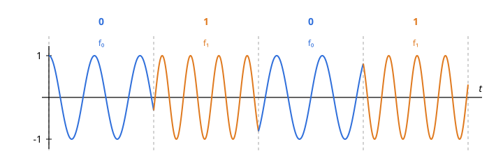
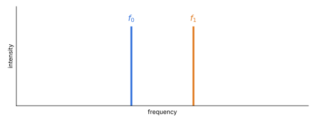
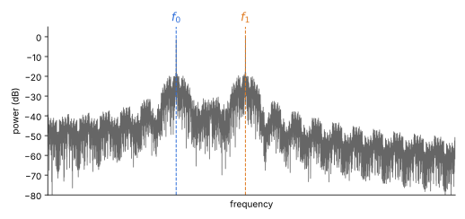
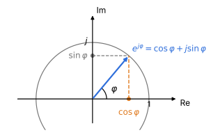
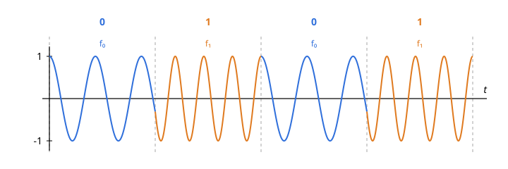
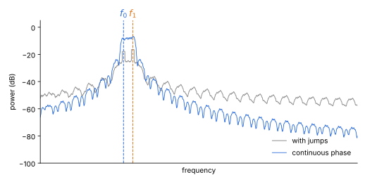
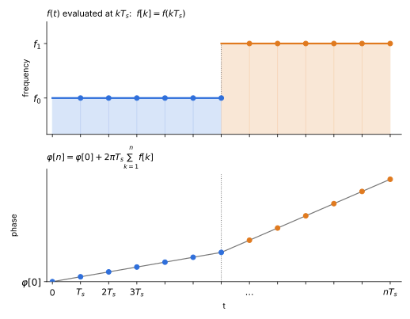

Let's start with the acronym: FSK stands for Frequency-Shift Keying.
It's a digital modulation technique where information is encoded by shifting the frequency of a signal
in discrete steps.
Let's kick things off with the simplest case: Binary FSK (or BFSK or 2FSK), where the carrier is
shifted between two discrete frequencies to transmit binary data (\(0\)s and \(1\)s).
 
Say we choose two frequencies, \(f_0\) and \(f_1\) and we want to transmit the following bit string: \(0101\).
In the real domain, the first and the second signals will be described by:
\[x_0(t) = \cos(2\pi f_0 t), x_1(t) = \cos(2\pi f_1 t)\]
Assuming we choose signal \(x_0\) to transmit a zero and \(x_1\) to transmit a one, we'll get a signal looking like:
Notice, however, the jumps at some bit boundaries in the waveform above. This is far from ideal: an abrupt
change in the signal is, mathematically, a very sudden event, and sudden events need a lot of frequency content
to be described. The result is spectral splatter (often loosely called spectral leakage):
instead of the clean spectrum we saw earlier, we get something like this:

There are two main reasons.
Where do those jumps come from? To answer, we need to look at a cosine in a different way. A complex number \(z = a + jb\), with \(j^2 = -1\),1 can be drawn as a point in a plane: \(a\) on the real axis, \(b\) on the imaginary axis. A point on the circle of radius 1, at angle \(\varphi\) from the real axis, is described by Euler's formula: \[e^{j\varphi} = \cos\varphi + j\sin\varphi\]

This gives us a link with the real signals we wrote earlier: a cosine is simply the real part of that point, \[\cos\varphi = \mathrm{Re}\{e^{j\varphi}\}\] so \(x_0(t) = \cos(2\pi f_0 t)\) is the shadow, on the real axis, of a point that keeps going around the circle. The angle \(\varphi\) is what we call the phase. For our tones, \(\varphi(t) = 2\pi f_0 t\) or \(2\pi f_1 t\).
If the point goes around the circle, we can ask how fast it does so. The rate at which the angle grows is the angular velocity: \[\omega(t) = \frac{d\varphi}{dt} \qquad [\text{rad/s}]\] One full turn is \(2\pi\) radians, so the number of turns per second, that is the frequency, is: \[f(t) = \frac{1}{2\pi}\frac{d\varphi}{dt}\]
The nice thing about this definition is that it works even when the frequency changes over time and that is what FSK does. It also tells us what we should require from \(\varphi(t)\): its derivative must be the frequency we want.
Let's go back to the definition of frequency and rearrange it, so that the phase is on one side: \[f(t) = \frac{1}{2\pi}\frac{d\varphi}{dt} \quad\Longrightarrow\quad \frac{d\varphi}{dt} = 2\pi f(t)\] Now integrate both sides between \(0\) and \(t\) (calling the integration variable \(\tau\)): \[\int_0^t \frac{d\varphi}{d\tau}\,d\tau = 2\pi \int_0^t f(\tau)\,d\tau\] On the left, the integral of a derivative gives back the function evaluated at the endpoints, \(\varphi(t) - \varphi(0)\). Hence: \[\varphi(t) - \varphi(0) = 2\pi \int_0^t f(\tau)\,d\tau\ \Longrightarrow \varphi(t) = \varphi(0) + 2\pi \int_0^t f(\tau)\,d\tau\] The phase at time \(t\) is the initial phase plus the area under \(f\) (multiplied by \(2\pi\)). Since the area under a function changes only a little over a short interval, even when \(f\) itself switches abruptly from \(f_0\) to \(f_1\) the phase can't jump: it just starts growing at a different rate. The same bit string now gives:

The frequency still changes abruptly, but the signal is now smooth across the switch, and the spectrum reflects it: the skirts around the tones fall off considerably faster.

A computer doesn't know about continuous time: it only works with samples taken every \(T_s\) seconds (the sampling frequency is \(f_s = 1/T_s\)). We therefore evaluate the frequency only at \(T_s, 2T_s, 3T_s, \dots\) and call \(f[k] = f(kT_s)\) the value at the \(k\)-th sample.
The integral is the area under \(f(t)\). With samples spaced by \(T_s\), we can approximate it with a right Riemann sum: the interval \([0, nT_s]\) is split into \(n\) slices of width \(T_s\), and each slice is replaced by a rectangle whose height is the value of \(f\) at the slice's right endpoint, \(f[k] = f(kT_s)\): \[\int_0^{nT_s} f(\tau)\,d\tau \approx \sum_{k=1}^{n} f[k]\,T_s\ = T_s\sum_{k=1}^{n} f[k]\] and the phase at the \(n\)-th sample becomes \[\varphi[n] = \varphi[0] + 2\pi T_s \sum_{k=1}^{n} f[k] = \varphi[0] + \frac{2\pi}{f_s}\sum_{k=1}^{n} f[k]\]

The sum can be rewritten in a more convenient form. Let's expand it for the first two samples: \[ \begin{aligned} \varphi[1] &= \varphi[0] + \frac{2\pi}{f_s}\,f[1] \\[4pt] \varphi[2] &= \varphi[0] + \frac{2\pi}{f_s}\,\big(f[1] + f[2]\big) \end{aligned} \] Now notice that the first two terms of \(\varphi[2]\), \(\varphi[0]\) and the \(f[1]\) contribution, are exactly \(\varphi[1]\). Grouping them: \[ \varphi[2] = \underbrace{\varphi[0] + \frac{2\pi}{f_s}\,f[1]}_{\varphi[1]} + \frac{2\pi}{f_s}\,f[2] = \varphi[1] + \frac{2\pi}{f_s}\,f[2] \] The same trick works for any \(n\): we split off the last term of the sum, and what remains is the phase at the previous sample. \[ \varphi[n] = \underbrace{\varphi[0] + \frac{2\pi}{f_s}\sum_{k=1}^{n-1} f[k]}_{\varphi[n-1]} + \frac{2\pi}{f_s}\,f[n] \quad\Longrightarrow\quad \varphi[n] = \varphi[n-1] + \frac{2\pi}{f_s}\,f[n] \] In words, each sample's phase is the previous one plus a small step and the step depends on the frequency at that sample. This makes it obvious that there can be no jump: every sample starts exactly where the previous one ended.
Remember that our signal is \(x(t) = \cos(\varphi(t))\). Sampling it at \(t = nT_s\) is now immediate, since \(\varphi(nT_s)\) is exactly the \(\varphi[n]\) we just computed: \[x[n] = x(nT_s) = \cos(\varphi[n])\] This sequence of numbers is our continuous-phase FSK signal. All we need to generate it is the list of frequencies \(f[n]\) (\(f_0\) or \(f_1\), depending on the bit) and a running sum.
So far we have treated \(f_0\) and \(f_1\) as arbitrary. But how far apart should the two tones be, so that a receiver can reliably tell them apart? That is the topic of the next section.